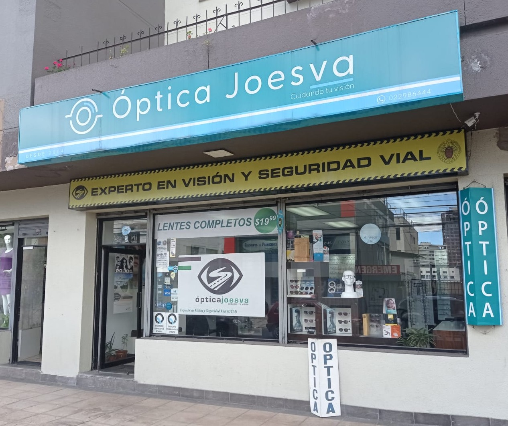

Acerca de
“En nuestra óptica, cuidamos tu salud visual con tecnología de vanguardia, productos con garantía
y
una asesoría totalmente personalizada. Nos diferenciamos por ofrecer una experiencia cercana,
profesional y enfocada en tus necesidades reales, asegurando comodidad, precisión y confianza en
cada etapa: desde la valoración visual hasta la entrega de tus lentes.”
Misión
“Brindamos soluciones integrales para el cuidado de la salud visual, combinando productos con
garantía y tecnología de calidad con una atención personalizada. Nos guiamos por nuestra
filosofía
PCSV (Profesionales Comprometidos con la Salud Visual), para asegurar el bienestar y confianza
de
cada paciente.”
Visión
Al 2028, buscamos ser una óptica representativa en la ciudad de Quito cubriendo las necesidades
de
nuestros pacientes con asesoría personalizada y tecnología de punta, fundamentándonos en el
compromiso, transparencia, responsabilidad y calidad, mejorando así el desarrollo del área de
salud
visual procurando el bienestar de la sociedad en función de los procesos aplicados tanto de la
valoración visual como el el proceso productivo y entrega de lentes correctores.
Valores
- Compromiso
- Transparencia
- Responsabilidad
- Calidad